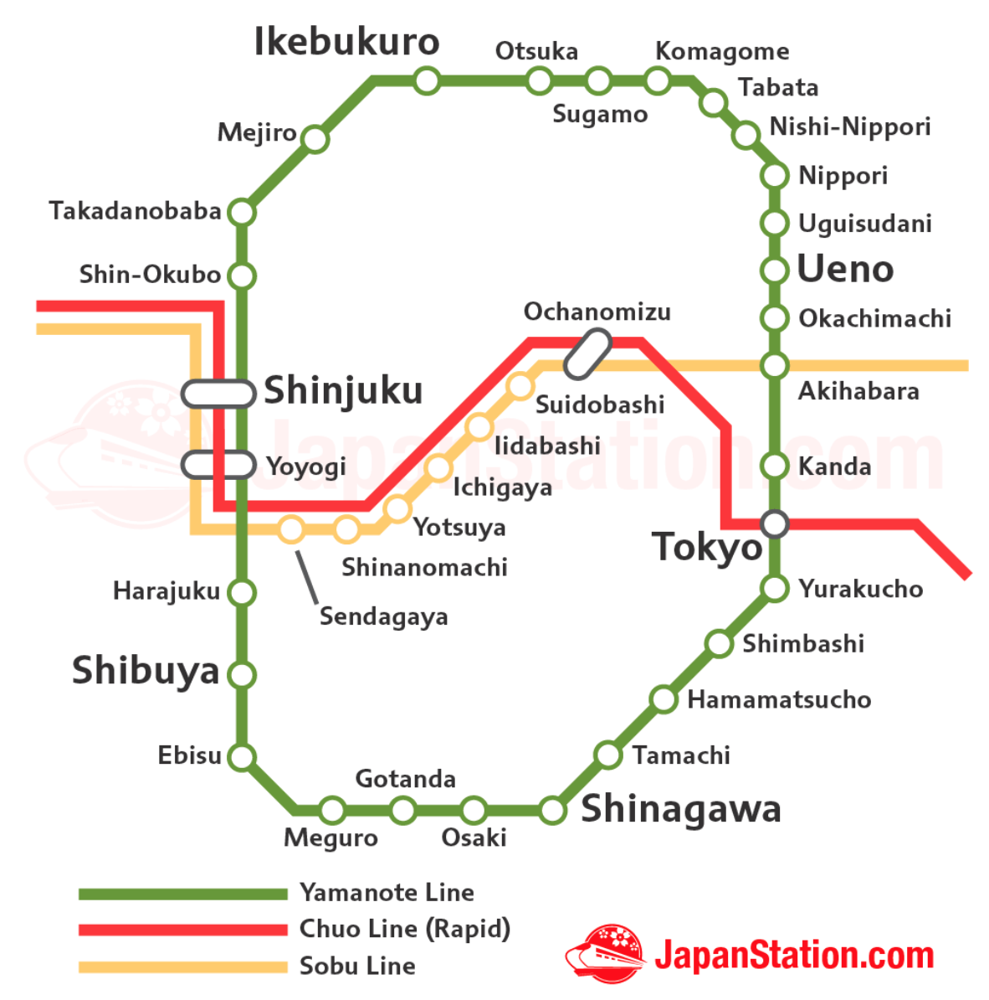

Travel & Hotels Find hotels, nearby places to eat, and some general travel tips for Tokyo.
Where will everyone be staying?
Attendees can choose to stay at whichever hotel or accommodations they please. To make it easier we have compiled a list of nearby hotels. However, the majority of guests will be booking at:
Additional Hotel suggestions
Tokyo area guide: https://www.japanvisitor.com/japan-city-guides/tokyo-area-guides
Shinjuku (The Heart of Tokyo) - Recommended Area (Travel to Venue: 25 min)
- Tokyo Stay Shinjuku: http://www.tokyustay.co.jp/e/hotel/SJ/
- Hotel Gracery Shinjuku: http://shinjuku.gracery.com
- Various AirBnBs in Shinjuku: airbnb.com
Jimbocho (10 min walk to venue)
- Hotel Villa Fontaine Jimbocho: https://www.hvf.jp/eng/location/jimbocho.php
Ginza (luxury area) (Travel to Venue: 25 min)
- Mitsui Garden Hotel Ginza Premier: https://www.gardenhotels.co.jp/eng/ginza-premier/
Asakusa (Quieter area with temple) (Travel to Venue: 30 min)
- Ryokan Asakusa Shigetsu: http://shigetsu.com/e/index.html (traditional Japanese style)
Akihabara (Technology center of Tokyo) (Travel to Venue: 20 min)
- Washington Hotel Akihabara: http://akihabara.washington-hotels.jp
There is a huge variety for accomodation in Tokyo. Make sure to browse Tripadvisor and Hotels.com to find the perfect place for yourself.
Very simplified tube map of the Yamanote line in Tokyo
Venue: between Akihabara and Suidobashi
Recommended area for hotels: Between Shinjuku and Shibuya
The Yamanote Line
Staying close to a green Yamanote line station will allow easy travel in Tokyo.
Full Tokyo subway map: https://www.tokyometro.jp/en/subwaymap/pdf/rosen_en_1702.pdf
Stay connected
Public WiFi can be hard to find in Tokyo, so consider purchasing a SIM card at the airport. You'll need an unlocked device. Or alternatively you can rent a portalable wifi from the Airport to connect multiple devices. Google Maps does a good job with subways and trains, but a good connection is key to making the most of your trip to Tokyo.
Passmo Card
Save yourself the headach of purchasing a ticket for each journey on the train. Pay 500 Yen ($5usd) for a Passmo card and just load it up with some money. It's much easier to just scan yourself in than deal with tickets. Watch the gate for your remaining amount to know when you'll need to top up again. You can purchase them from just about any ticket machine with the Passmo logo on.
Language
Public transit is setup primarily in Japanese and English. Some stations include Korean, and Mandarin. Japanese people are very accepting of foreigners, and will do everything they can to try to understand. Google translate can be helpful during your travels. We recommend learning some basic greetings and thank you to help you get by.
Bring Walking Shoes
If you plan on exploring Tokyo during your trip, make sure you bring a good pair of walking shoes. Despite an easy to use public transit system. It's not unheard of for tourists to put on 15,000-25,000 steps in a day.